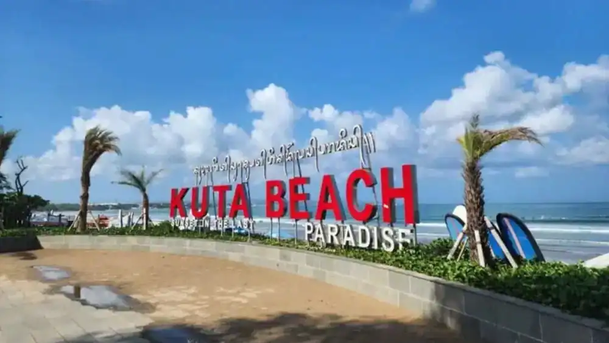

Destinasi Wisata Populer

Pantai Kuta
Rasakan energi liburan yang tak pernah padam di Pantai Kuta, ikon pariwisata Bali yang terkenal dengan garis pantai berpasir putih luas dan ombak yang ramah bagi para peselancar. Menjelang sore, bersiaplah menyaksikan momen matahari terbenam (sunset) berwarna keemasan yang legendaris sambil menikmati riuh rendah atmosfer tepi pantai yang hidup. Destinasi ini adalah pilihan sempurna bagi Anda yang mendambakan perpaduan antara wisata pantai yang santai, kemudahan akses kuliner, dan hiburan malam yang dinamis dalam satu tempat.

Raja Ampat
Rasakan keajaiban alam bawah laut kelas dunia di Raja Ampat, surga tropis yang terkenal sebagai salah satu kawasan dengan keanekaragaman hayati laut terkaya di bumi. Gugusan pulau karst yang menjulang di atas laut biru jernih menciptakan panorama spektakuler yang memanjakan mata. Aktivitas snorkeling dan diving di perairan ini akan mempertemukan Anda dengan terumbu karang warna-warni serta ribuan spesies ikan eksotis. Raja Ampat adalah destinasi impian bagi pencinta alam, petualang, dan fotografer yang mencari pengalaman tak terlupakan.

Gunung Bromo
Saksikan keindahan magis yang seolah membawa Anda ke planet lain saat berkunjung ke Gunung Bromo, lanskap vulkanik megah yang berselimut kabut syahdu. Petualangan dimulai menjelang fajar dengan mengendarai jip 4x4 membelah lautan pasir luas, diikuti momen mendebarkan mendaki tangga menuju bibir kawah aktif, dan berpuncak pada pemandangan matahari terbit di atas awan yang luar biasa fotogenik. Bromo adalah destinasi wajib bagi para pemburu fajar, pencinta fotografi, dan siapa saja yang ingin merasakan sensasi petualangan pegunungan yang menantang.

Labuan Bajo
Masuki gerbang petualangan eksotis di Labuan Bajo, destinasi super prioritas yang menawarkan pengalaman berlayar mewah (Live on Board) dengan kapal Phinisi tradisional. Jelajahi keunikan pulau-pulau tropis di sekitarnya, mulai dari trekking menantang di bukit ikonik Pulau Padar, bersantai di keajaiban Pink Beach, hingga melihat langsung kehidupan komodo, reptil purba terbesar di dunia, langsung di habitat aslinya. Tempat ini menyuguhkan kombinasi sempurna antara kemewahan, romansa, dan petualangan alam liar yang tak terlupakan.

Danau Toba
Temukan kedamaian jiwa di Danau Toba, danau vulkanik terbesar di dunia yang menyuguhkan hamparan air biru raksasa berpagar perbukitan hijau yang megah. Dengan udara pegunungan yang sejuk dan menyegarkan, destinasi ini mengajak Anda menyelami kekayaan budaya suku Batak yang kental dan penuh sejarah di Pulau Samosir. Cocok menjadi tempat healing terbaik, Danau Toba menawarkan pelarian yang tenang dari hiruk-pikuk perkotaan sekaligus menjadi ruang hangat untuk liburan santai bersama keluarga tercinta.